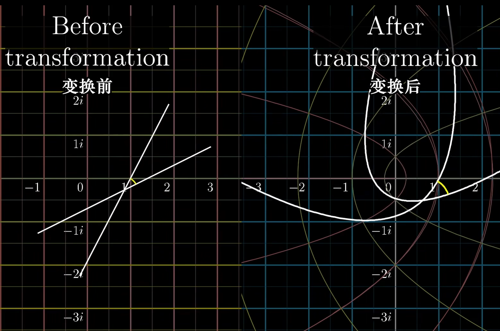
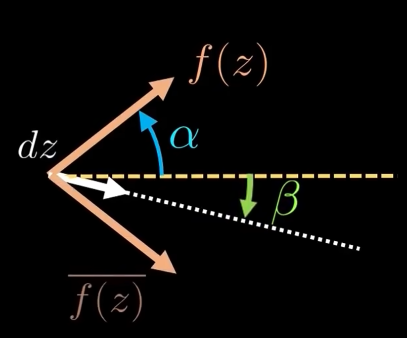
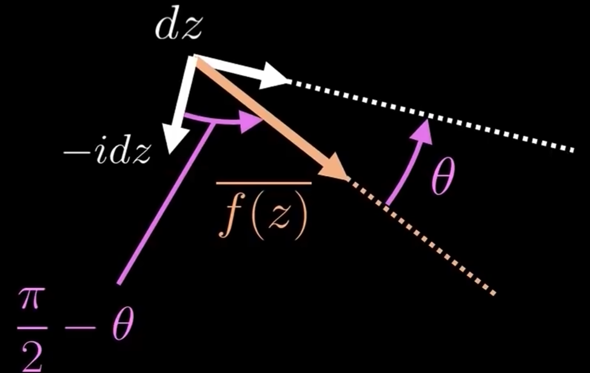
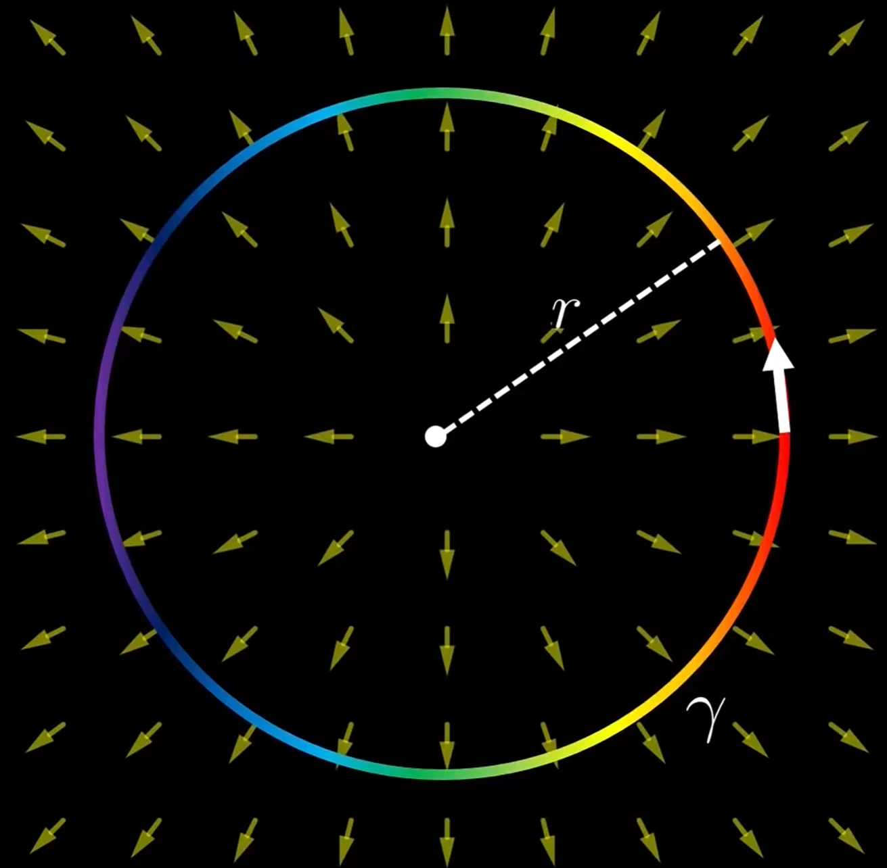
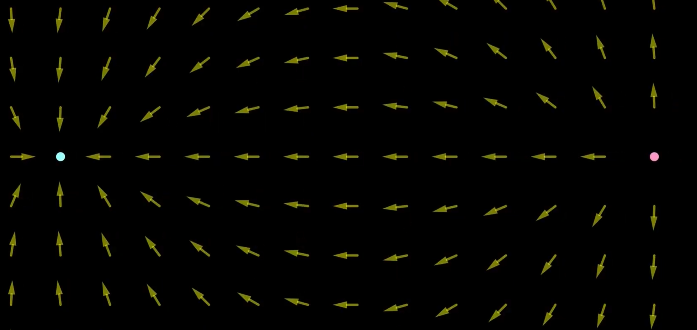
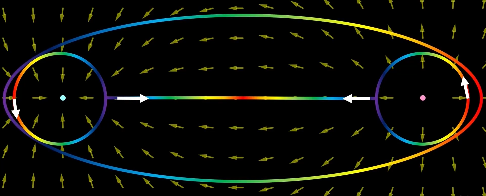
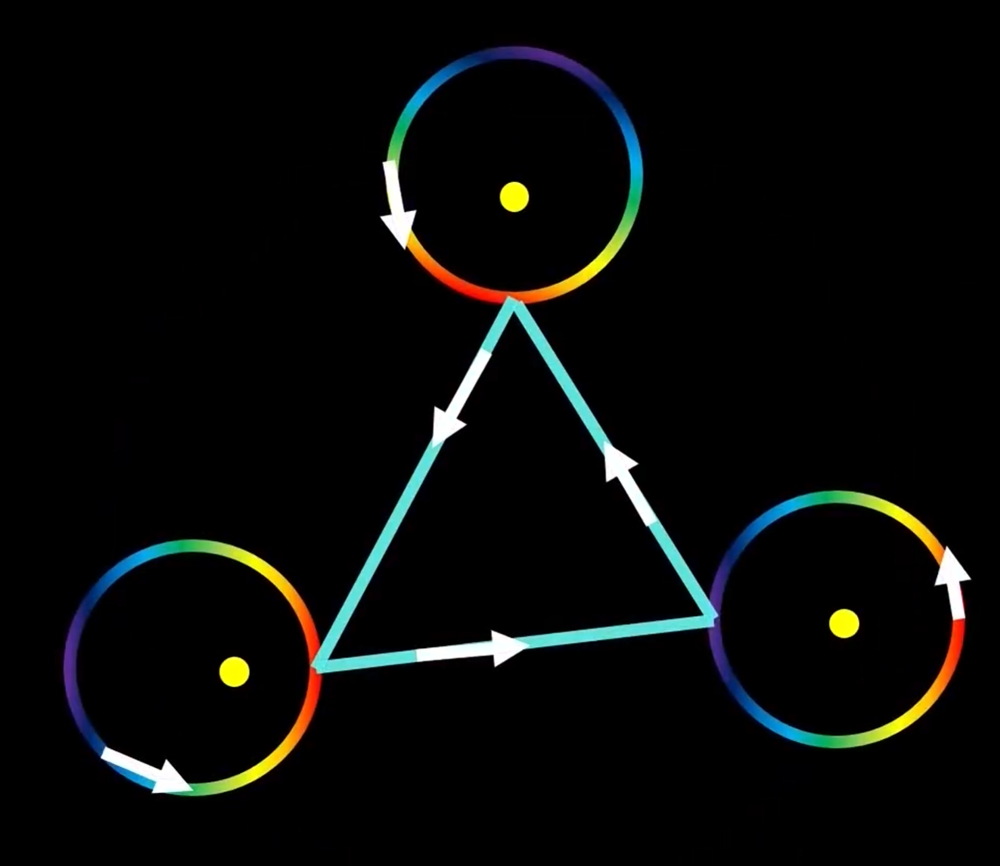

复变函数的几何意义
在工科课程的复变函数中, 一般并不会介绍复变函数背后的几何意义. 但本人认为, 理解复变函数中运算的意义时, 其几何意义具有很大的帮助. 这一部分的内容主要参考视频 【官方双语】黎曼ζ函数与解析延拓的可视化 , 【汉语配音】复变函数的积分、柯西定理和留数定理（上）【锦南】, 【汉语配音】复变函数的积分、柯西定理和留数定理（下）【锦南】.
I. 复函数
从一个最简单的例子说起: 复幂次. 对于一个形如 (x)a+ib 的幂运算, 可以将其拆分为: xa⋅xib.
其中, xib 可以看作一个旋转变换. 此变换不改变作用对象的模长, 而仅仅将其旋转. 其中, b 决定了旋转角度, x 决定了旋转速率.

同样地, 对于任意一个复函数, 我们均可以将其视作一个变换. 它将复平面中的点 s 变换到了点 f(s).
II. 复变函数导数
类似于一元函数中的"光滑", 复变函数中利用变换的相关性质来描述其可导与否.
对于一个函数变换后的像空间 f(s), 我们再引入求导运算. 在这个运算中, 取空间中任意曲线, 在进行变换 f 后, 它在某点处的切矢量将会拉伸并转动. 拉伸的比例记为 k, 称作伸缩率; 转动的角度记为 α, 称为转动角. 定义:
f′(z)=keiα
当一个函数是可导的时候, 一点处任意切矢量的转动角相同. 因此, 相交于一点的任意曲线在 f 变换前后的夹角是相同的. 这一性质又被称为保角性.

当一个变换是保角的时候, 它对应的函数便是可导的, 这也说明该函数是解析函数.
注: 对于可导函数, f′(z)=0 是个特殊的点. 因为在该点处伸缩率为0, 转动角难以定义. 事实上, 该点处两个曲线的交角变为原来的整数倍.
III. 复变函数积分
对于复积分 ∫γf(z)dz, 有两种理解方式:
- 记z=φ(t), 将实部与虚部分别用同一个参数写为参数方程, 则积分与曲线积分无异.
- 利用向量场理解.
这里, 主要介绍第2种观点.
引入Polya向量场. 定义向量场 p(x,y)=(u,−v). 其中, 我们记 f(z)=u+iv. 可以看出, 此向量场的每一个向量均表示了函数 f(z) 的共轭 fˉ(z).
向量场有如下性质:
{∇⋅p=∂x∂u−∂y∂v∇×p=−∂x∂v−∂y∂u
可见, 当Polya向量场的散度与旋度均为0时, 对应的复函数 f(z) 满足C-R条件, 是个解析函数.
现在重新计算复积分. 使用指数形式表示, 有: f(z)dz=∣f(z)∣⋅∣dz∣ei(α+β). 其中, α,β 分别为一点处 f(z),dz 与实轴的夹角. 如果我们仅考虑结果的实部, 可以写成如下形式:
Re[f(z)dz]=∣f(z)∣⋅∣dz∣cos[β−(−α)]=f∗⋅dz
可以看出, 积分式实部的物理意义便是沿积分路径的Polya向量场做功.

下面继续考虑结果的虚部. 在积分路径中, 我们认为 −idz 对应一点的法向量. 记 θ=α+β. 容易得到法向量与 f∗ 的夹角为 2π−θ. 因此有:
Im[f(z)dz]=f∗⋅dn
可见, 积分式的虚部对应积分路径上Polya向量场的通量.

综上所述, 复积分的物理意义可以写作:
∫γf(z)dz=Wγ(f∗)+iQγ(f∗)
通过以上特性, 我们可以说明复积分的若干性质.
Cauchy定理
如果积分路径内部的区域解析, 则其满足C-R条件. 根据Polya向量场的定义, 这说明其中有:
- ∇⋅f∗=0. 这说明向量场是无源场, 沿任意环路的通量为0.
- ∇×f∗=0. 这说明向量场是保守场, 沿任意环路的做功为0.
综合以上两点, 我们直接得到了: ∮f(z)dz=0, 这便是Cauchy-Goursat定理.
重要积分式的理解
考虑如下积分: ∮∣z∣=rz1dz.
如果带入 z=x+iy, 不难发现 f∗(z) 的方向与 z 是相同的. 其Polya向量场如图:

由此可以发现, 此向量场是个有源无旋场. 沿环路积分时, 向量场的做功为0而通量不为0.
事实上, 如果利用参数方程 z=reiφ, 可以很容易得到这个重要积分的结果为 aπi. 这是个仅有虚部的值, 与我们的定性分析相符.
考虑2个相反的上述向量场叠加. 这描述了1个源和1个汇形成的向量场, 与电偶极子的电场分布相同.

设源, 汇分别位于 ±z0 处. 当这两个 z0 相距很近时, 由极限 z0→0lim(z−z01−z+z01)=kz21 (k 为比例常数), 这个向量场可以近似看作 f(z)=z21 的场.
由于上述向量场是个有源无旋场, 我们知道: 只要积分路径包含同样的源或汇, 则复积分总是相同的. 由此, 我们可以将 ∮∣z∣=rz21dz 的圆周路径做如下改变:

由此可见, 源与汇的通量显然互相抵消, 故原积分的结果为0.
同样地, 两个 z21 的源与汇叠加还可得到 z31 . 如此进行迭代, 便可以直观得到当 n=1 时, ∮∣z∣=rzn1dz=0.
留数定理
通过上面的例子, 我们已经知道, 沿着一个大环路的积分可以转化为绕源或汇的几个小环路积分之和. 事实上, 这些源或汇便是函数的奇点:

可以知道, ∮Cf(z)dz=∑∮Ckf(z)dz. 对于第 k 个环路, 由Laurent展开定理, f(z) 总可以被展开成如下形式:
f(z)=…+(z−ak)2c−2+z−akc−1+c0+c1(z−ak)+…
可以看出, 在 Ck 的积分中, 除 c−1 项以外的积分均为0. 故最终的结果为 2πi⋅c−1. c−1 即留数.
将所有 k 个积分相加, 便得到了留数定理:
∮Cf(z)dz=2πi∑Res[f(z),ak]